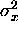
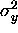
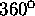
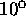
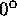
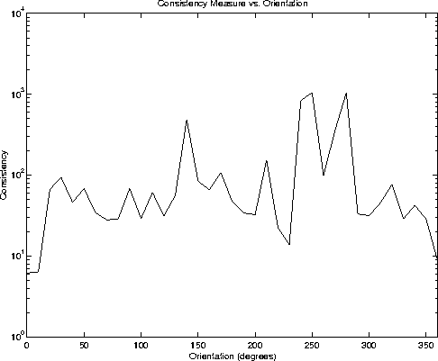

Throughout our experimentation, we have constrained the pose of the
robot such that it faces in a consistent orientation. While one could
conceivably train the robot in a higher dimensional configuration
space, the computational and storage costs would be too high. To
close this chapter, we propose instead that orientation can be
recovered given a database that is trained for only one orientation.
Our goal is to measure the degree to which the set of independent pose
estimates are consistent with one another. This is accomplished by
employing a consistency measure,

where
is the square-root of the sum of the variances (one for each axis -
 and ) of the set of independent pose
estimates obtained for each matched landmark candidate in the image,
G is the percentage of independent pose estimates which are not
rejected as outliers, P is the percentage of 'matched' candidate
landmarks - that is, the ratio of the number of successful
candidate-tracked landmark matches out of all detected landmark
candidates, and finally, R is the raw number of retained independent
pose estimates. Clearly, from these values, lower values of M
indicate that there is good consistency between the measurements
obtained from the image and the training database.
Given our consistency measure, M, we can recover the robot's orientation by rotating the robot through , taking an image at each orientation (or a set of sample orientations) and finding M. The orientation at which M is minimised is considered to be the correct orientation.
Figure 6.20 plots M for a series of orientations taken at  increments from Scene IV. The correct orientation is correctly predicted to be .

Figure 6.20: The consistency measure plotted as a function of
orientation. The correct orientation is .
The results in Figure 6.20 indicate that the measure is useful for recovering the orientation of the robot when it is unknown. This result greatly increases the utility of the method, since the robot pose need not be constrained while online (provided that it is constrained during the training phase, which is supervised), and dead-reckoning errors in orientation can be corrected.